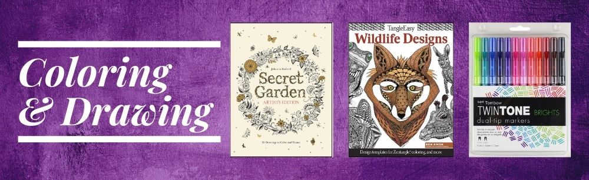

Current Projects
Portfolio ReactJS
Side Project
This side project I am working on is to convert this current portfolio into ReactJS. I will be using the React framework to build
my current portfolio. This project is not only to enhance the portfolio but also a learning curve.
Tools:
- Visual Studio Code
- Git Bash
- GitHub
Skills: HTML, CSS, ReactJS
Internship Experiences
Herrschners, Inc. (Sept. 2020 - Present)
At Herrschners, I work with the Marketing Team on their email and website design.
I utilize HTML, CSS, JavaScript, and the Bootstrap framework to create and make updates
to the Herrschners, Willow Yarns, and the PuzzleShoppe sites when needed. A few projects
I was given working here so far are:
FAQs Landing Page
- Redesigned the FAQs landing page by adding accordions.
Retail Store
- Redesigned the landing page
- Created a slider and an anchor to the page
- Update landing page each week for the weekly Retail Store Ad.
Menu Bar (All three sites)
- Make updates to menu images and links.
Privacy and Security Landing Page
- Added anchors to each question, enabling users to jump right to what they're looking for.
Email Sign Up Landing Page (NEW-In Progress)
- Created possible layouts to display the new email sign up contents
- First was the original direction sent from our digital merchandising manager - Original Document
- I begain to create wireframes for different versions using Figma. Each low fidelity wireframes here are parallel to the prototypes below - Version 1 | Version 2 | Version 3 | Version 4
- These following PDFs are the prototypes/mock ups of the layouts I created using HTML/CSS - Version 1 | Version 2 | Version 3 | Version 4
- The final version that we selected was Version 4. This version, I displayed it the way as it is because I viewed this page as if I was the customer. As a customer, I want information as to what I am sigining up for, what the perks are, what kinds of sales and how each of these differ from one another. Delivering that version to my Director and Digital Merchandising Manager, we have selected number 4 to fit customer needs.
- Final version we selected with descriptions. Images are to be uploaded once received. - Final Prototype
A few other projects that I've worked on but are not shown:
- Building carousels and sliders
- Creating Masonry Layout (Pinterest layout) with HTML & CSS
- Google Analytics reports
- Gathering email reports and working with spreadsheets
I also helped to create some graphics for the website. Below are a few samples of the
graphics I created on our website.
Painting & Art landing page graphics



LEARN Graphic

What's New Graphic (Header Icon)

Willow Yarns Graphic (Banner & Footer)


Social Media Graphics


Continuing Education - University of Wisconsin-Stevens Point (June 2019 - Aug. 2020)
At the Continuing Education and Outreach Department, I helped with the transition to the new website using SharePoint and helped maintain the website.
Standards Documentation
- Worked with the web team to form a standard documentation for the website
- Used the guide to maintain web consistency
- We've created some room for customization but our main goal to create this documentation was to help keep the website consistent
Wireframes
-
Created wireframes to show Program Managers potential layout of their pages
Sample Wireframes - Conference programs wireframe sample - Wireframes were then used as templates for future purposes
- Utilized Balsamiq
Graphics
- Created graphics for icons - click here to view icons on CE page
Web Tasks
- Used HTML, CSS, and some JavaScript to built icon buttons and tiles
- Maintained web consistency within tiles and landing pages
- Organized and built a Contact page
- Put together Staff Directory page
- Ensure that contents and web pages are following the UWSP Communication Standards Manual
Course Projects
Buku Bodywork (Spring 2021)
Capstone Course at the University of Wisconsin-Stevens Point
For this project, I teamed up with another student to build a WordPress website for a client in Minneapolis, MN.
The goal of this website is to help the client promote her small business online as it is currently through a
word of mouth.
Live Website: Buku Bodywork
Tools:
- WordPress
- Figma
- Git Hub
- Wireframing - Created wireframes to lay out contents for the website - Home Page | Services Page | Resources Page | About Page | Contact Page |
- HTML, CSS
- Theme and plugin installation
Principles of Online Marketing and Ecommerce (Fall 2020)
For this course, I learned about online marketing and ecommerce. Throughout this course, I learned many principles that helped
me through my internship at Herrschners. We evaluated digital platforms and how ecommerce sites are designed to display user decisions.
Through this course, a student and I collaborated on three projects.
-
Project 1: UX Evaluation on Eastbay
We evaluated Eastbay by looking at decisions, social factors, anchoring, cognitive biases, instinct, habits, rewards, stories, and desire for mastery. Here is a PDF of the UX evaluation. - UX Evaluation - Eastbay -
Project 2: UX Evaluation on Frys
We evaluated another ecommerce website, Frys. Here, we evaluated all the best practices on a digital retail shop. Here is a PDF of the UX Evaluation - UX Evaluation - Frys -
Project 3: YOUtensils
For this project, a student and I collaborated on creating a digital retail store on a website. YOUtensils was the retail shop that we created. As we learned about the UX evaluations throughout the course, we had to apply what we learned onto this project. We considered our target audiences and ensure that the website included all the best practices. Here is a PDF that walks through our target audience, wireframes for desktop and mobile versions, and the Psychology of Shopping Factors - YOUtensils Case Study Project
Tool Used: Balsamiq
Evaluation of User Interfaces (Spring 2020)
For this course, we learned three different evaluation methods: Heuristic Evaluation, Cognitive Walkthrough, and User Testing. Working
with other students from this course, I have learned a lot about evaluating interfaces. Below are a few projects that we worked on.
- Case Study Project (USA Today) - We conducted heuristic evaluations and cognitive walkthroughs for this project. The user interface that we decided on was USA Today. We gathered our information through user testing to find if how easy or hard it was to navigate and use the site. The PDF walks through our findings. USA Today Evaluations
-
Dave's Body Shop -
For this project, we learned how to conduct user testing. We selected
Dave's Body Shop due to them being
a very minimalistic website with improvements that can be made. As we gathered participants, we conducted moderated and
unmoderated usability tests. After those usability tests were finished, we analyzed our data and found that
people have different approaches to completing a task.
- Burger King - Heuristic Evaluation - The Burger King project was to conduct a heuristic evaluation on a website or an app. A student and I chose the Burger King app to conduct the heuristic evaluation on. The take away from this project was to evaluate all aspects of an application of how well or not, they followed best practices. Here is a PDF showing heuristic evaluations and cognitive walkthroughs.
Tools: Userlytics for User Testing
Snap Chat User Research (Fall 2019)
From this course as we learned about user research methods, I teamed up with 2 other students to work on a project based on the usage of
Snap Chat. Snap Chat is a popular application that users of all age appear to download and use. As we learn more about research methods
and how to conduct them, we used those methods to conduct research and data.
Methods Used:
- Semi Structured Interviews: We conducted interviews to collect qualitative data from our participants from their usage of Snap Chat
- Diary Studies: Would be useful
Share Economy, Inc. (Spring 2019)
The goal of this course project was to create a prototype for the potential of Share Economy, Inc. Share Economy is an online
website where users can either get services or offer their services to the community. I have created wireframes for the steps of
a potential user to offer, receive, and pay for their service. Below is a PDF file that will allow you to view the wireframes
and click through what the potential user would do.
Note: This is not a real website. This business was created for the purpose of this course project.
Tool Used: Balsamiq
Wireframe: PDF click through
Prototype: Create Your Account - I created a prototype using HTML/CSS for one of the wireframes.
accesSPoint Project (Fall 2018)
For this course project, I teamed up with two other students to help make improvments to redesign the product UWSP's accesSPoint portal
and make it easier for users. We went through many different skills to develop the final product.
Our design process
- Conduct stakeholder interview and document key findings
- Viewed other direct competitors to accesSPoint
- Conducted interviews of current accesSPoint users
- Identified intial patterns in the data to create persona candidates - We created two primary personas
-
Extracted design requirments from our personas
- Design requirements document and data. - Created site maps of the current accesSPoint and the group's redesign
- Created functional wireframes to help allow us to see what the user flow would look like
Tool Used: Balsamiq
Skills Used:
- Personas - Scarlett & Bryce are two of the primary personas. We created scenarios from their goals and expectations. Here, you can find that we extracted data and functional requirements.
- Sitemapping - accesSPoint sitemaps The first sitemap is the current acceSPoint site. The second sitemap shows a condensed version of accesSPoint.
- Wireframing - Here is a PDF. These are actually functional wireframes where you can click through like how the user would. There will be small arrows on the wireframe to follow for a click-through.